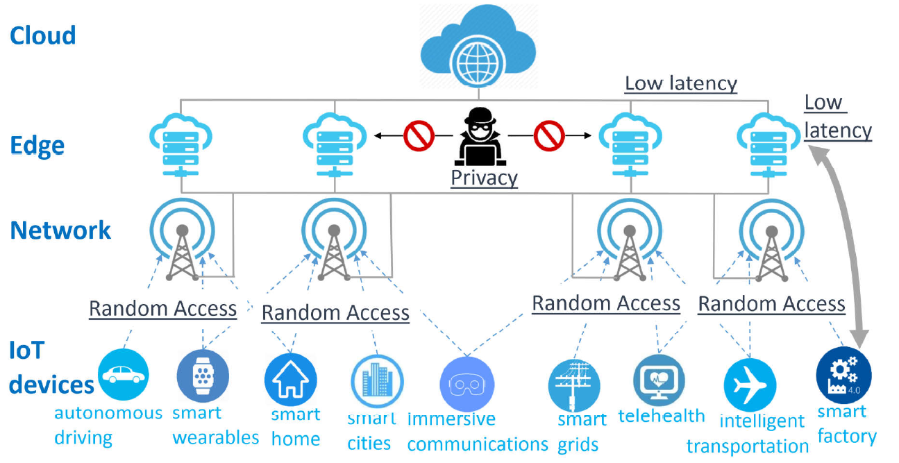

LANTERN: Low-lAtency aNd privaTe Edge computing in Random-access Networks is an H2020-MSCA-IF project. It receives funding from the European Union’s Horizon 2020 research and innovation programme under the Marie Skłodowska-Curie grant agreement No 101022113.

Paving the way to the future of the Internet of things
With the continuous rise of the Internet of things and the steady spread of connected devices, there is an increasing need concerning private edge computing and connectivity. This project will assist in fulfilling this need by researching low-latency and private edge computing networks and studying ways in which they could be developed in wireless random access networks. We aim to overcome the challenges of establishing foundations for privacy and reliability in latency-critical, multiserver and multiclient edge computing and in devising resilient coding schemes intertwined with energy-efficient scalable wireless random access methodologies.
Project objective
We are living in a world where connected devices outnumber human population, and this trend keeps growing: around 24.6 billion connections are forecasted in 2025—more than three times the estimated population. This gives rise to the Internet of Things (IoT) in which virtually all devices are interconnected and continuously share data. The IoT is a key enabler for a host of applications, such as intelligent transportation systems, smart cities, and smart grids. Thus it promises to transform the way we live. To realize the IoT, it is crucial and timely to develop a communication and computation infrastructure that is able to support the processing of a vast amount of time-sensitive data, for which a centralized computation is inadequate. Edge computing has emerged as a novel paradigm to guarantee very low-latency and high-bandwidth computing services. It involves moving the computation power from the cloud to where data is generated, by pooling the available resources at the network edge.
In this project, we investigate how low-latency and private edge computing protocols can be developed in wireless random-access networks. Relying on tools from information theory and coding theory, we will tackle the two following challenging objectives:
- to establish a foundation for privacy and reliability in latency-critical, multi-client and multi-server edge computing in random-access networks;
- to devise resilient coding schemes together with energy-efficient and scalable wireless random-access protocols to achieve low latency and preserve privacy in distributed edge computing.
The results of this project will help paving the way to the full realization of the IoT in the near future.
Project description
- Fields of science: smart city, wireless, internet of things
- Programme: H2020-EU.1.3.2. - Nurturing excellence by means of cross-border and cross-sector mobility
- Topic: MSCA-IF-2020 - Individual Fellowships
- Funding Scheme: MSCA-IF-EF-ST - Standard EF
- Overall budget: € 191 852,16
- Period: 1 October 2021 - 30 September 2023
- Beneficiary: Chalmers University of Technology, Gothenburg, Sweden
- Fellow: Khac-Hoang Ngo
- Supervisors: Alexandre Graell i Amat and Giuseppe Durisi
Publications
Journal Papers
Khac-Hoang Ngo, G. Durisi, A. Graell i Amat, A. Munari, and F. L´azaro, “Timely status updates in slotted ALOHA networks with energy harvesting,” submitted to IEEE Transactions on Communications, 2024.
Khac-Hoang Ngo, G. Durisi, A. Graell i Amat, P. Popovski, A. E. Kalor, and B. Soret, “Unsourced multiple access with common alarm messages: Network slicing for massive and critical IoT,” under minor revision to IEEE Trans. Commun., Feb. 2023.
Khac-Hoang Ngo, A. Lancho, G. Durisi, and A. Graell i Amat, “Unsourced multiple access with random user activity,” IEEE Trans. Inf. Theory, Feb. 2023. [arXiv] [Simulation code]
G. Gur, A. Kalla, C. de Alwis, Q.-V. Pham, Khac-Hoang Ngo, M. Liyanage, and P. Porambage, “Integration of ICN and MEC in 5G and beyond networks: Mutual benefits, use cases, challenges, standardization, and future research,” IEEE Open J. Commun. Soc., 3, 1382–1412, Aug. 2022.
Conference papers
Khac-Hoang Ngo, J. Östman, G. Durisi, and A. Graell i Amat, “Secure aggregation is NOT private against membership inference attacks,” in European Conference on Machine Learning and Principles and Practice of Knowledge Discovery in Databases (ECML PKDD), Vilnius, Lithuania, Sep. 2024. [arXiv]
Khac-Hoang Ngo, G. Durisi, A. Graell i Amat, A. Munari, and F. Lázaro, “Age of information in slotted ALOHA with energy harvesting,” in IEEE Global Communications Conference (Globecom), Kuala Lumpur, Malaysia, Dec. 2023. [Preprint]
Khac-Hoang Ngo, A. Graell i Amat, and G. Durisi, “Irregular repetition slotted ALOHA over the binary adder channel,” in IEEE International Conference on Communications (ICC), Rome, Italy, May 2023. [arXiv]
Khac-Hoang Ngo, G. Durisi, A. Graell i Amat, P. Popovski, B. Soret, and A. E. Kalør, “Unsourced multiple access for heterogeneous traffic requirements,” in 56th Asilomar Conference on Signals, Systems, and Computers, Invited Paper, CA, USA, Oct. 2022
Khac-Hoang Ngo, G. Durisi, and A. Graell i Amat, “Age of Information in Prioritized Random Access,” in 55rd Asilomar Conference on Signals, Systems, and Computers, CA, USA, Nov. 2021, invited paper. [arXiv] [Video] [Simulation code]
Khac-Hoang Ngo, A. Lancho, G. Durisi, and A. Graell i Amat, “Massive uncoordinated access with random user activity,” in IEEE International Symposium on Information Theory (ISIT), 2021. [arXiv] [Video] [Simulation code]
Khac-Hoang Ngo, N. T. Nguyen, T. Q. Dinh, T.-M. Hoang, and M. Juntti, “Low-latency and secure computation offloading assisted by hybrid relay-reflecting intelligent surface,” in International Conference on Advanced Technologies for Communications (ATC), Hanoi, Vietnam, Oct. 2021, Best Paper Award. [arXiv] [Video] [Simulation code]
Dissemination
Talks
“Unsourced Multiple Access for the Internet of Things”, H2020 INCOMING Summer School, Gothenburg, Sweden, June 2022
“Unsourced Multiple Access: An Information-Theoretic Analysis”
- Linköping University, Sweden, 11 October 2023
- Advanced Institute of Engineering and Technology (AVITECH), UET, VNU, Vietnam, 22 May 2023
- National Institute for Research in Digital Science and Technology (INRIA), Lyon, France, 20 April 2023
- CentraleSup´elec, Paris-Saclay University, France, 19 January 2023
- “Unsourced Multiple Access With Common Alarm Messages: Network Slicing for Massive and Critical Internet of Things”,
- Zugspitze Workshop on Communications, Zugspitze, Germany, 24 Jan. 2023
- Equipe Traitement de l’Information et Systemes (ETIS), France, 11 Oct. 2022
“Irregular repetition slotted ALOHA over the binary adder channel,” Communication System Group Seminar, Chalmers University of Technology, 24 Mar. 2023.
“Age of Information in Prioritized Random Access With Energy Harvesting,” German Aerospace Center (DLR), Munich, Germany, 28 Sep. 2022.
“Age of Information in Prioritized Random Access,” Communication System Group Seminar, Chalmers University of Technology, 21 Jan. 2022.
“Massive Uncoordinated Random Access for the Internet of Things,” Advanced Institute of Engineering and Technology (AVITECH), University of Engineering and Technology, Vietnam National University-Hanoi, Vietnam, 11 May 2021.
- “Massive Uncoordinated Random Access,” Communication System Group Seminar, Chalmers University of Technology, 23 Apr. 2021.
Videos
All presentation videos related to LANTERN are available here.
Activities of the Fellow
Training
Ongoing training for a Diploma in Teaching and Learning in Higher Education at Chalmers University of Technology
Completed courses: Diversity and inclusion for learning in higher education (2 credits); University teaching and learning (2.5 credits); Theoretical perspectives on learning (2.5 credits); Supervising research students (3 credits); Supervising writing processes (2.5 credits); Pedagogical project (4.5 credits)Attended workshop Mental health issues in academia and contemplative solutions organized by Alumnode, 9 Dec. 2021.
Attended workshop series Navigate academia and maximize your potential organized by Chalmers Doctoral Students Guild and Dear Academia, 29 Oct – 3 Dec. 2021
Teaching
- Chalmers University of Technology: Teaching Assistant
- 2024 Spring: Wireless Communications (master course, taught in English, 6 hours of exercise sessions and 4 hours of main lectures, handling a group project and an oral exam, final-exam preparation and grading)
- 2023 Spring: Information theory (master/PhD course, taught in English, 4 hours)
- 2023 Spring: Wireless Communications (master course, taught in English, 6 hours of exercise sessions and 4 hours of flipped-classroom lectures, handling a group project and an oral exam, final-exam preparation and grading)
- 2022 Fall: Statistics and machine learning in high dimensions (master/PhD course, taught in English, 8 hours)
- Fall 2021: Statistics and machine learning in high dimensions (master/PhD course, taught in English, 8 hours)
- Spring 2021: Information theory (master/PhD course, taught in English, 16 hours)
Conference Organization
- Technical Program Committee member, International Conference on Control, Automation and Information Sciences (ICCAIS), 2023
- Technical Program Committee member, APSIPA Annual Summit and Conference, 2023
- Technical Program Committee member, 12th International Symposium on Information and Communication Technology (SoICT), Hanoi, Vietnam, December 2023
- Technical Program Committee member, Joint EuCNC & 6G Summit, Gothenburg, Sweden, Jun. 2023.
- Technical Program Committee member, 26th Int. ITG Workshop Smart Antennas & 13th Conference on Systems, Communications, and Coding (WSA&SCC 2023), Braunschweig, Germany, Feb. 2023.
- Technical Program Committee member, 11th Int. Symp. Inf. Commun. Technol. (SoICT), Hanoi, Vietnam, Dec. 2022.
- Communication track chair, 2022 International Conference on Advanced Technologies For Communications (ATC), Hanoi, Vietnam, Oct. 2022
- Special session co-chair, 25th International ITG Workshop on Smart Antennas (WSA 2021), French Riviera, France, Nov. 2021
- Special session co-chair, 2021 International Conference on Advanced Technologies For Communications (ATC), HCM City, Vietnam, Oct. 2021
Reviewer
for various international journals and conferences.
Other
- Administrator of telecom-vn – a Facebook group for Vietnamese researchers in telecommunications. Organize regular group seminars.
- Organize several online workshops on information and communication technologies for the Vietnamese community.
Reproduciple Research
The simulation codes of LANTERN are accessible at https://github.com/khachoang1412. The links are also associated with each paper in the list of publications.
Achievements
- Qualification for the functions of university professor/lecturer, National Council of Universities (CNU), France, 2023
- Best Paper Award, IEEE Statistical Signal Processing Workshop (SSP), Hanoi, Vietnam, 2023
- Featured in the spotlight of the 9th Heidelberg Laureate Forum, Germany, 2022
- Best Paper Award, 2021 International Conference On Advanced Technologies For Communications (ATC), HCM City, Vietnam, 2021